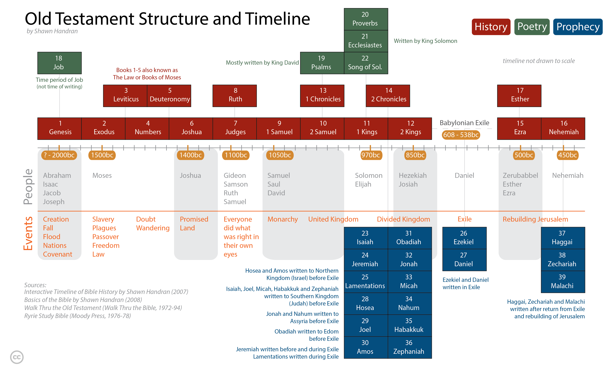
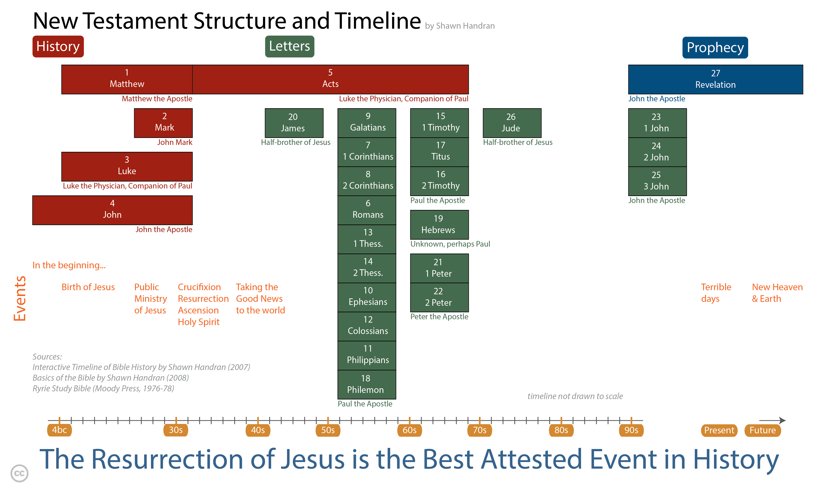
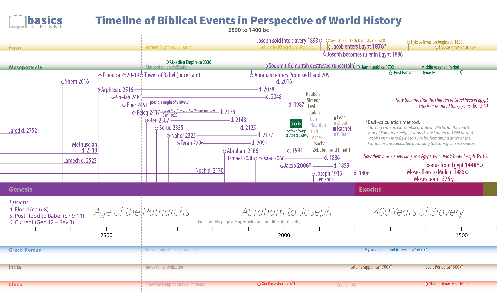
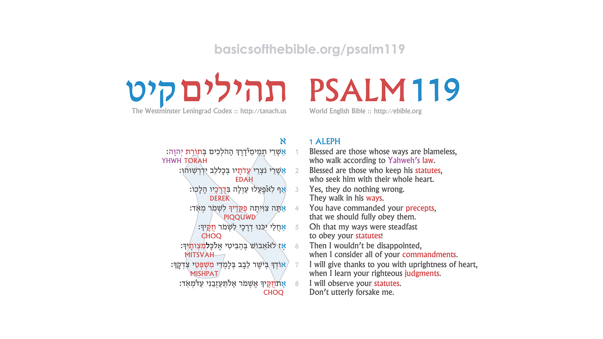
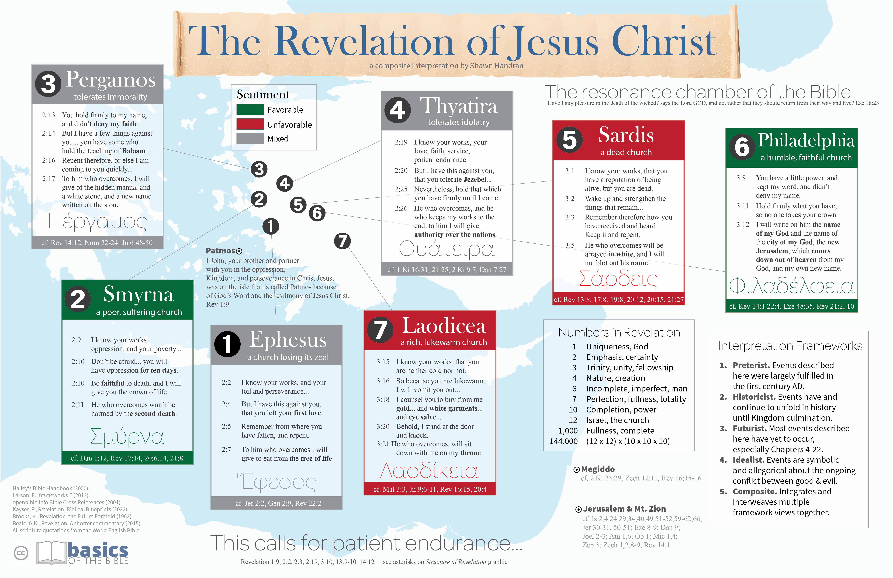
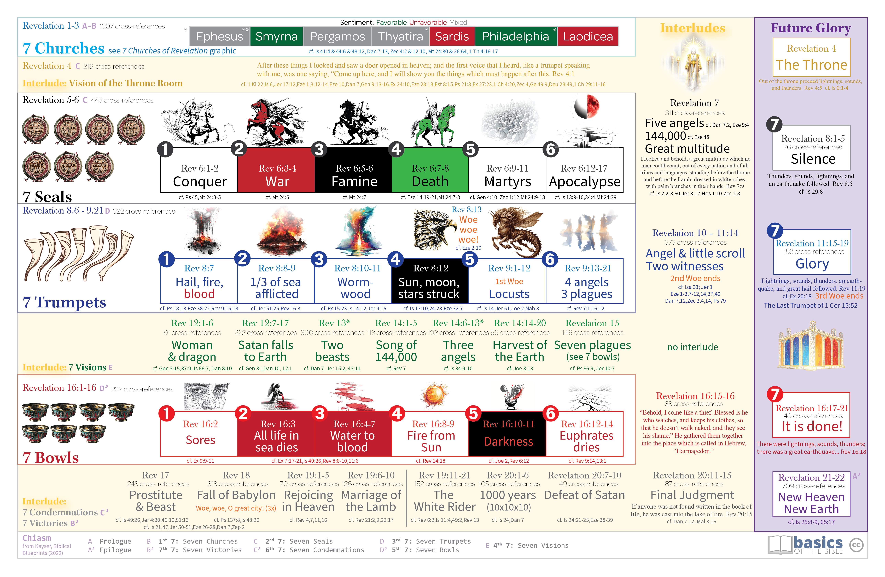
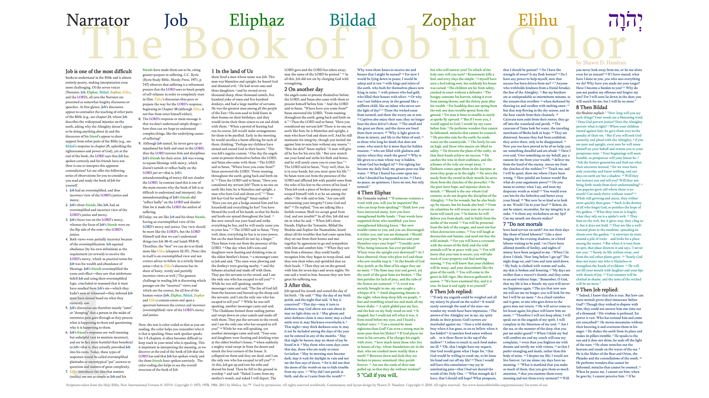
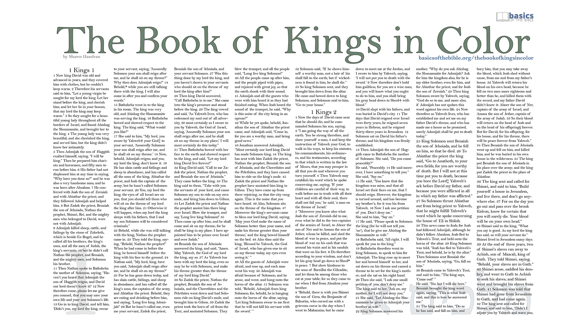

A visual guide that illustrates the structure of the Bible, arranged chronologically.

Old Testament

New Testament
Provides a better understanding of when the events described in the Bible occurred in history. Available in over a dozen languages.
BST • Old Testament
Bible Structure and Timeline — Old Testament
Old Testament view (high-definition PNG)
BST • New Testament
Bible Structure and Timeline — New Testament
New Testament view (high-definition PNG)
BST • translations
Bible Structure and Timeline — Translations
Available in over a dozen languages.
العربيةArabic
BahasaIndonesian
简体中文Chinese (Simplified)
繁體中文Chinese (Traditional)
PinyinChinese (Pinyin)
FrançaisFrench
DeutschGerman
हिंदीHindi
MagyarHungarian
ItalianoItalian
日本語Japanese
한국어Korean
PortuguêsPortuguese
РусскийRussian
EspañolSpanish
ไทยThai
Tiếng ViệtVietnamese
See the website for downloads and the most up-to-date language list.
BBSG • overview
Basics of the Bible Study Guide
A self-directed reading plan and study guide for people that are new to the Bible and want to learn what it means to be a follower of Jesus.
BBSG
Introduction
Before you start the 49-day reading plan
BBSG
The Basics
Get the big picture of the Bible in two weeks
BBSG
Dig Deeper
Dig deeper into the Bible in five additional weeks
BBSG
Next Steps
You are now equipped to go through the rest of the Bible at your own pace
BBSG
Translations
Available languages
Tip: click a card to jump to that section.
BBSG • introduction
Guide — Introduction
The common approach
Start at the beginning and read linearly through to the end
Treat the Bible like any other book
Often leads to frustration
The big picture does not readily emerge while reading
A different approach
Study the books of the Bible in a non-sequential order
Designed specifically for those new to the Bible
Allows the big picture of the Bible to emerge more clearly
Provides a guided pathway into understanding
BBSG • the basics
Guide — The Basics
Four readings completed over 14 days.
The Basics covers three books from the Greek Scriptures (commonly referred to as the New Testament) and a portion of the first book of the Hebrew Scriptures (commonly referred to as the Old Testament).
New Testament
Mark
Day 1: Mark 1-4 Day 2: Mark 5-8 Day 3: Mark 9-12 Day 4: Mark 13-16
New Testament
1 John
Day 5: 1 John 1-3 Day 6: 1 John 4-5
Old Testament
Genesis 1–11
Day 7: Genesis 1-3 Day 8: Genesis 4-5 Day 9: Genesis 6-8 Day 10: Genesis 9-11
New Testament
Romans
Day 11: Romans 1-4 Day 12: Romans 5-8 Day 13: Romans 9-12 Day 14: Romans 13-16
BBSG • dig deeper
Guide — Dig Deeper
Six readings completed over 5 weeks.
The Dig Deeper study continues building on the readings from The Basics study. Again, the emphasis is on selected books from the Greek Scriptures (New Testament) and you will also finish the book of Genesis from the Hebrew Scriptures (Old Testament).
New Testament
Luke
Day 15: Luke 1-4 Day 16: Luke 5-8 Day 17: Luke 9-12 Day 18: Luke 13-16 Day 19: Luke 17-20 Day 20: Luke 21-24
New Testament
Acts
Day 21: Acts 1-4 Day 22: Acts 5-8 Day 23: Acts 9-12 Day 24: Acts 13-16 Day 25: Acts 17-20 Day 26: Acts 21-24 Day 27: Acts 25-28
New Testament
Ephesians
Day 28: Ephesians 1-3 Day 29: Ephesians 4-6
Old Testament
Genesis 12–50
Day 30: Genesis 12-14 Day 31: Genesis 15-17 Day 32: Genesis 18-20 Day 33: Genesis 21-23 Day 34: Genesis 24-26 Day 35: Genesis 27-29 Day 36: Genesis 30-32 Day 37: Genesis 33-35 Day 38: Genesis 36-38 Day 39: Genesis 39-41 Day 40: Genesis 42-44 Day 41: Genesis 45-47 Day 42: Genesis 48-50
New Testament
Gospel of John
Day 43: John 1-3 Day 44: John 4-6 Day 45: John 7-9 Day 46: John 10-12 Day 47: John 13-15 Day 48: John 16-18 Day 49: John 19-21
New Testament
Matthew 28
Day 49: Matthew 28
Note: Day 49 includes readings from both John and Matthew.
BBSG • next steps
Guide — Next Steps
A proposed reading plan to finish the Bible in 3-12 months.
Categories of readings to help you continue through the rest of the Bible at your own pace:
1. The Law
2. Prophecy & End Times
3. Life in the Body of Christ
4. Warnings Against False Teachers
5. OT History: Conquest–Judges
6. OT History: Monarchy
7. Writings of David & Solomon
8. OT History: David–Solomon
9. OT History: Divided Kingdoms
10. OT Prophets: Northern Kingdom
11. Detailed Study of Southern Kingdom
12. OT History: Exile & Return
13. Post-Exile Prophets
14. Special Books
Topic
Reading order
Tip: Click to toggle between showing or hiding the reading list.
BBSG • translations
Guide — Translations
Available in the following languages:
简体中文Chinese (Simplified)
繁體中文Chinese (Traditional)
EspañolSpanish
हिंदीHindi
العربيةArabic
FrançaisFrench
PortuguêsPortuguese
See the website for downloads and updates.
GRAPHICS • OVERVIEW
Bible Visualizations
Beautifully-crafted visualizations that facilitate understanding of the Bible.
GRAPHICS
Timelines
A visual guide that illustrates the events of the Bible in the context of history
GRAPHICS
Acrostic Psalms
Psalms where the first letter of each line is a letter in the Hebrew alphabet
GRAPHICS
Revelation
Understanding the structure of book of Revelation
GRAPHICS
Job & Kings in Color
Verses are colored according to the speaker (Job) or kingdom (Kings)
Tip: click a category to preview that set of graphics.
GRAPHICS • TIMELINES
Timelines

A visual guide that illustrates the events of the Bible in the context of history.
GRAPHICS • ACROSTIC PSALMS
Acrostic Psalms

Psalms where the first letter of each line is a letter in the Hebrew alphabet.
GRAPHICS • REVELATION
Revelation

The seven churches described in Revelation chapters 2–3.

Understanding the structure of the book of Revelation.
GRAPHICS • JOB & KINGS
Job & Kings in Color

Verses are colored according to the speaker in the book of Job.

Verses are colored according to the kingdom in the books of Kings.